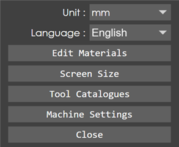
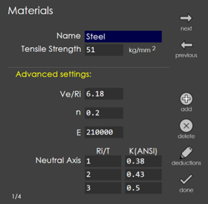
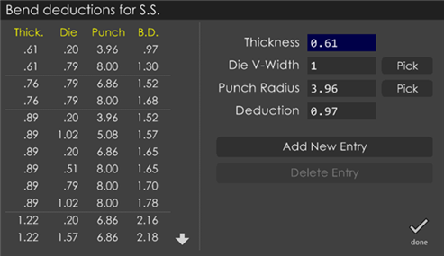
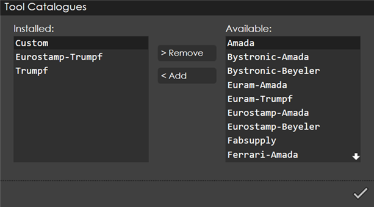
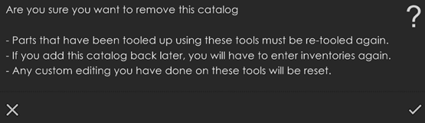

Other Settings
This page groups together the settings that are global.

Unit
Switches the current working units (mm and inch).
Language
Use this option to select the language preferred.
Edit Materials

You can use this dialog to view existing materials in RightAngle, add new materials or remove materials from the library. You can navigate through the material list by pressing the next and previous commands. Use the add command to add a new material to the list. Once you press this button, a page with default materials' data is shown. Change the necessary fields to modify and then press done. A warning message is issued if the changes needs to be saved. Press the ok mark to save the changes or press the cancel mark to discard the changes. To remove an existing material from the library, navigate to that material and then press delete.
The Ve/Ri field in a material is used for die selection, among others. It should always be set to a valid input, and never to 0. Currently ignores inputs if you try to set it below 1 or above 10 to prevent accidental setting of this field to 0. n corresponds to strain hardening exponent and E corresponds to Young’s Modulus.
Deductions:
You can use bend deduction tables to control unfolding length (in addition to the earlier method of using K-factors). The first stage is defining the bend deduction tables for each material. Use this Deductions command to bring up the bend deductions table for the currently selected material.
The bend deduction table is organized by material, then by thickness, die v-width and punch-radius. You can see the bend deduction table for S.S. in the picture shown below (the dotted horizontal lines separate one thickness from the other).

The list of bend deductions is seen on the left and tapping on one brings it up for editing. The currently selected entry (if any) is highlighted with a small dot near it. On the right, type in a thickness, V-width, punch radius and deduction and tap the button to either Add New Entry or Update Deduction depending on whether you are editing an existing deduction value or entering a new one. When you start with an empty database, enter the values in the corresponding input boxes and then press <Enter Values Above> button to add them to the deductions table.
You can also use the Pick buttons near the die V-width and punch-radius to pick a die or punch (from which the values are copied). Note that the deduction table is organized using only these keys: thickness, v-width and punch-radius, and not by the actual punch or die names. So, all dies that have the same V-width will share the same bend deduction entry. Once these entries are defined here, they can then be accessed from the Part Settings page.
Delete Entry:
Use this button to delete an entry from the bend deduction table.
Screen Size
Use this option to change the screen size of RightAngle.
Tool Catalogues
RightAngle now ships with several standardized tool catalogues. These can be installed and made available for use.

This list shows the tool catalogues that are already installed on the left, and the ones that are still available on the right. You can choose Add to add a complete tool catalogue to your installation, or use Remove to remove one. Removing a tool catalogue is an operation that has some consequences, so a warning shown below pops up:

The tool catalogues must be in a standardised format for these to be installable.
Machine Settings
Used to edit various machine parameters. Press the Close button to close the settings dialog.